漫谈windows桌面客户端的UI框架
图形化的界面可能是目前最友好最成熟的人机交互信息的载体。用户界面是否友好，是否能够快速与第三方的C++应用、Web应用集成，可不可以最大化利用公司现有的开发人员等因素决定着产品能否够快速的推向市场并占领市场。本文我们探讨一下当前主流的一些UI框架。
DirectUI – 一种界面开发思想
在桌面客户端开发中，使用最多的技术莫过于纯Native开发。这种开发方式可以实现最好的性能，可以比较容易的与第三方的C++应用集成。灵活性强，安装包体量小也是其优点。但如果采取这种开发方式，不可避免会造成开发难度大，周期长。
Native开发的一种方式就是，基于DirectUI开发一套界面库。其核心思想是指将所有的界面控件都绘制在一个窗口上，这些控件的逻辑和绘制方式都必须自己进行编写和封装，而不是使用Windows的原生控件，所以这些控件都是无句柄的（Windowsless）。
DirectUI 取名自微软的一个窗口类名“DirectUIHWND”，意为Paint on parent dc directly。 即子窗口不以窗口句柄的形式创建，只是逻辑上的窗口，绘制在父窗口之上。DirectUI技术广泛的应用于Window 系统，MediaPlayer播放器，即时通讯工具MSN Messager。
DirectUI技术的实现步骤和难点：
- 窗口的子类化，截获窗口的消息。
- 封装自己的控件，并将自己的控件绘制到该窗口上
- 封装窗口的消息，并分发到自己的控件上，让自己的控件根据消息进行相应和绘制
- 根据不同的行为发送自定义消息给窗口，以便程序进行调用。
- 一般窗口上控件的组织使用XML来描述
一个完善的DirectUI库有一些优势是Win32控件方式难以实现的。例如基于DirectUI的界面可以完全换肤 ，有着更高的效率，容易实现更加绚丽的动态效果。
采用 基于DirectUI 开发UI库 的软件有：
- xunlei7–XLGraphic

- QQ2009

- 微软
duIlib – 小巧灵活的皮肤引擎
Duilib是一款被众多知名软件广泛使用的，开源的directui界面库。
Duilib界面库的出现解决了使用传统MFC界面库开发软件不美观、界面细节处理不好、使用硬编码、开发效率低下、生成程序体积大等问题。而且传统MFC界面美化库大都使用HOOK等对系统影响比较大的技术，可能会导致系统不稳定或者引发其他错误。而Duilib界面库完全基于GDI在窗口上自绘，无其他依赖，未使用特殊或危险的系统调用，能够很好的解决传统MFC界面的一系列问题。
采用 duilib 做为界面库的软件有：
- 华为网盘
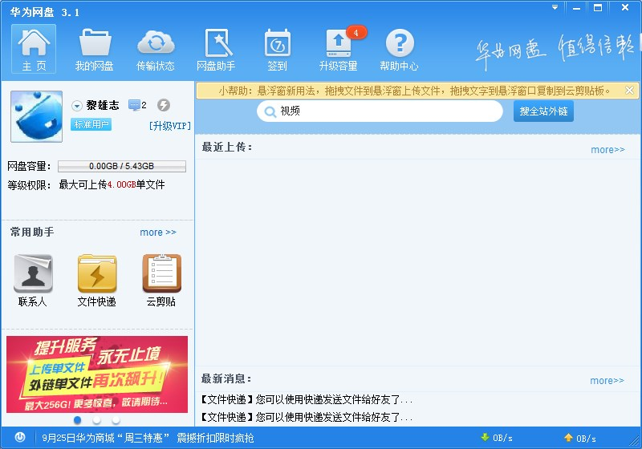
- 酷我音乐
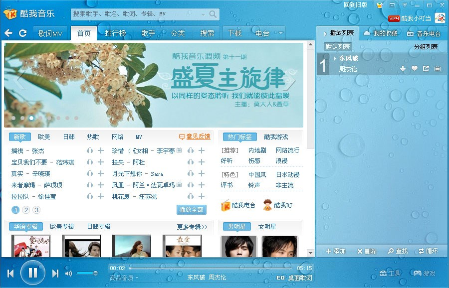
- 百度杀毒
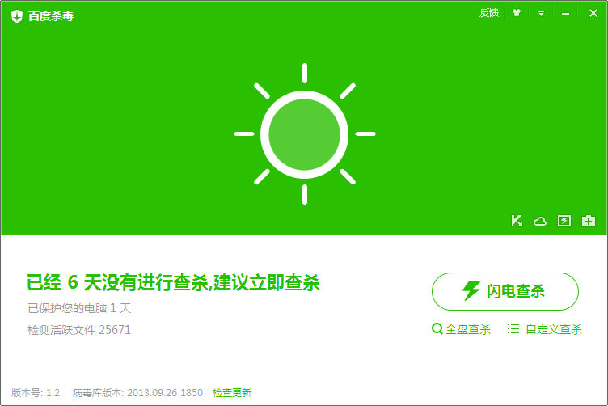
- 360卫士
- 微信windows版
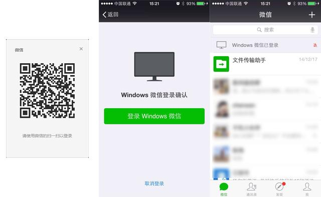
但是duilib存在着一些缺陷（以下摘自duilib的作者在知乎的回答）：
- 首先承认duilib开发人员能力不足吧，在项目开发、文档编写、宣传推广、构建社区方便存在非常大的不足。
- duilib项目定位也是迎合互联网桌面软件小而美的趋势发展起来的。并不适用于所有软件产品的ui，这和mfc、qt这种大而全的ui库是有区别的
- duilib毕竟只是一个开源工具性产品，除了ui开发人员，其他人关注的少也是正常的。而且duilib代码一般是被编译进其他软件里面，非专业人士一般不会知道也不会关注这个软件界面用什么做的
MFC – 历史遗留的古老框架
MFC的主要优点是可以用面向对象的方法来调用Windows API，以及能够更加便捷地开发应用程序。MFC将很多应用程序开发中常用的功能自动化，并且提供了文档框架视图结构和活动文档这样的便于自定义的应用程序框架。同时，在Visual C++内部也内建了很多对MFC的例如类向导这样的支持以减少软件开发的时间。
MFC这个框架里面有不少值得学习的设计思想，比如撇开语言提供给的RTTI（当时C++不支持RTTI），消息映射，Command路由等等，GUI方面用框架的类对象封装Win32 SDK的native对象。其中MFC中最最频繁的一个思想就是各种“表（table）驱动”
虽然MFC的源代码对用户是完全开放的，但是MFC的一些封装过程过于复杂，以致于新用户很难迅速掌握MFC的应用程序框架，以及在调试中定位问题的位置。同时，很多MFC对象不是线程安全的，致使在跨线程访问MFC对象时需要编写额外的代码。另外，MFC的很多类依赖于应用程序向导生成的代码，使得在使用Visual C++中其他类型的应用程序向导生成的工程中添加MFC支持的难度大大增加。MFC开发界面想做得好看一些十分困难，引用第三方基于MFC的界面库代码也是比较混乱。自始至终MFC最广为诟病的一个缺点就是“臃肿不堪”。
MFC更加适合开发一些不在乎分发的软件程序。也就一些历史包袱比较重且行业水平也就那样的机械、军工行业或者部分院校还在使用。
C++之父Bjarne Stroustrup对MFC的评价，部分片段：
毫无疑问，MFC是迄今为止被广泛运用的最糟糕的基础库。它违反了一个好的C++设计应该遵循的大多数原则。它严重地扭曲了许多程序员对于“什么是C++”的看法！
C++往往被以“很不理想”的方式使用着，MFC就是一个典型的例子，它甚至还达不到80年代中期对一个良好的OO设计的看法！我所说的“不理想”，是指没有达到它所能达到的可维护性的设计（通常这是由于对设计决策的糟糕的分解、低劣的封装以及对概念的拙劣表达而造成的），而并非指在外部压力下要尽快把项目赶出来的个体程序员或团队的“不理想”。
曾经使用MFC的软件有：
- 瑞星杀毒
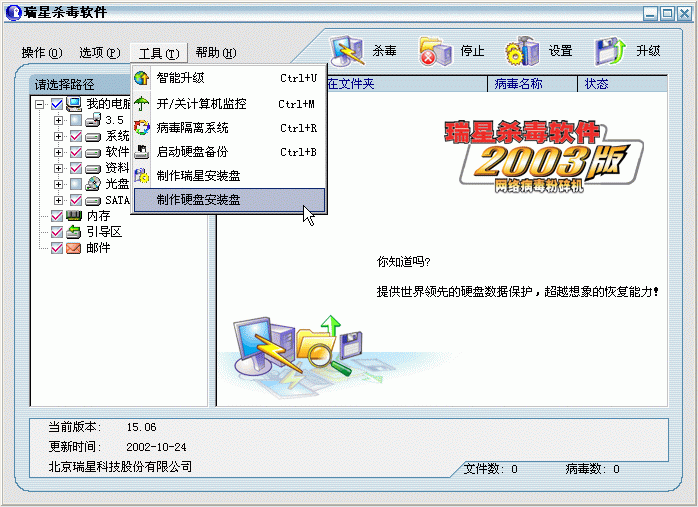
Qt – 跨平台的软件开发工具包
Qt一直以来被许多用户作为跨平台客户端开发的首选，其功能强大、支持的操作系统丰富、与C++结合紧密，其在某些特定领域(如嵌入式领域、军工、安防监控领域等)非常受欢迎。
digia接手QT后开发出了安卓和IOS版本的QT，实现了开发一套程序可以在全平台运行。但目前不建议使用QT开发安卓和IOS应用，坑还比较多但肯定会越来越完善。
QT框架优势
- 优良的跨平台特性
- 面向对象
- 丰富的API
- 支持2D/3D图形渲染，支持OpenGL
- 大量的开发文档
- XML支持
- 事件处理的便捷（灵活的信号槽机制）
- Qt架构健壮，性能强大
由于功能的全面，也导致了一些问题：
- Qt的库比较大
- 编译速度慢
- 网络模块特性和性能不是很高
采用Qt的软件有很多：
- 著名的跨平台图型环境 KDE Plasma 4

- 剑网3 的登录界面
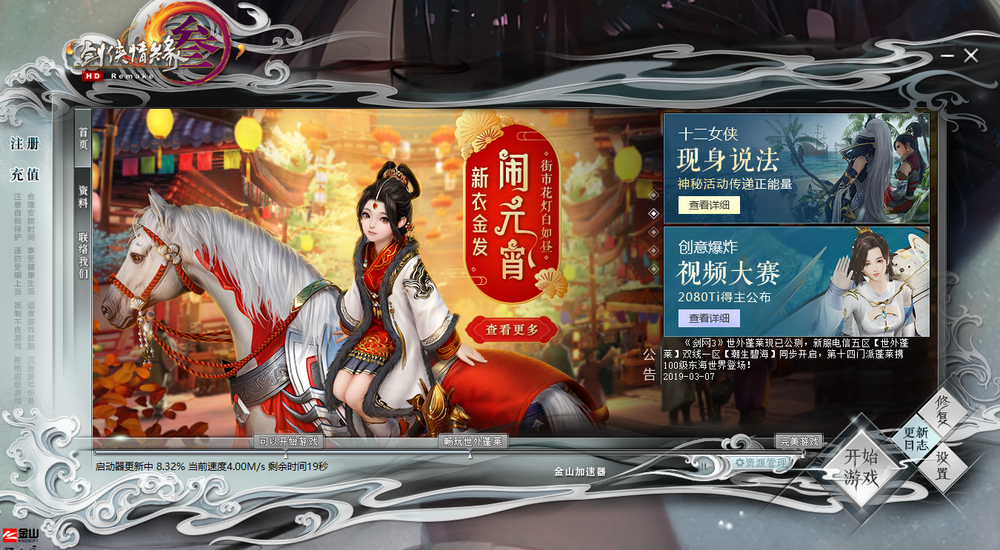
- 战网 的登录界面
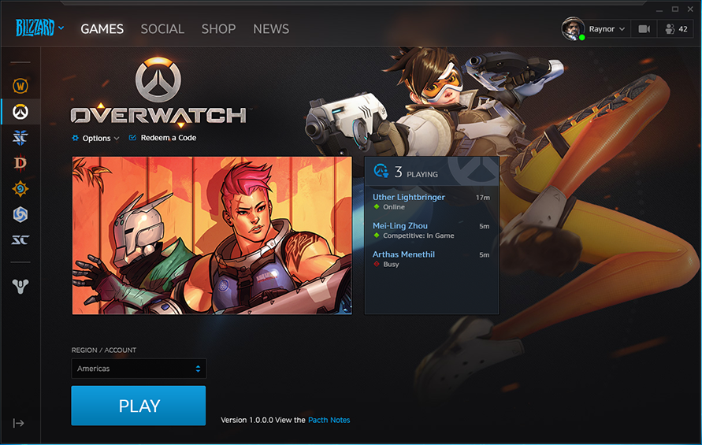
-
Opera 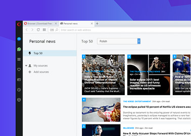
-
YY语音 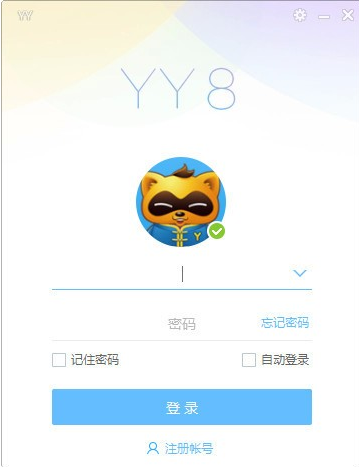
-
WPS Office

WPF – 新的Windows桌面应用开发模式
WPF（Windows Presentation Foundation）是微软推出的基于Windows Vista的用户界面框架，属于.NET Framework 3.0的一部分。它提供了统一的编程模型、语言和框架，真正做到了分离界面设计人员与开发人员的工作；同时它提供了全新的多媒体交互用户图形界面。
WPF其实不仅仅是图形引擎而已，它将给Windows应用程序的开发带来一次革命，因为新的架构提供了一种全新的开发模式。当然对于普通用户而言，最直观的就是界面越来越漂亮，看起来越来越舒服了；但对于开发人员而言，界面显示和代码将更好的得到分离，这与从前的桌面应用程序开发有很多不同（界面设置和代码是融合在一起的），这是比较具有革命性的改变之一。
程序人员与美工人员明确分工，美工人员可以使用Expression Studio中套装工具可视化的设计界面。然后交给程序开发组中的XAML就可以。让程序人员直接套用到开发环境，不需要想页面怎么切了。 对与WPF最重要的特色，矢量图的超强支持 。兼容支持2D绘图，比如矩形、自定义路径，位图等。文字显示的增强，XPS和消锯齿。三维强大的支持。包括3D控件及事件，与2D及视频合并打造更立 体效果。渐变、使用高精确的（ARGB）颜色，支持浮点类型的像素坐标。这些对GDI+远远不及的。 灵活、易扩展的动画机制！.Net Framework 3.0类库提供了强大的基类，只需继承就可以实现自定义程序使用绘制。接口设计非常直观，完全面向对象的对象模型。使用对象描述语言XAML。使用开发工具的可视化编辑。 您可以使用任何一种.Net编程语言（C#，VB NET等开发语言）进行开发。XAML主要针对界面的可视化控件描述，成生进会分析成.cs或.vb文件，并最后将编译为CLR中间运行语言。
WPF优势
- WPF制作的界面更加美观，漂亮。
- WPF开发模式更加科学，可以实现开发和界面设计分离
WPF缺点
- 开发的程序执行效率不是很高。
- 学习成本比较高
采用WPF的软件：
-
腾讯 概念版QQ 在实现IM的基础功能外，QQ概念版全面实现了多点触摸操作，还推出了动感相框、动态背景、多Tab聊天窗口、3D交互、矢量界面。
-
Microsoft Visual Studio 2010

多平台通用的UMP
在 Windows 10 中，微软首次引入了 UWP（通用 Windows 平台）的概念，让开发者只需一次编写，就能让程序在电脑和手机等多种设备上运行。同时，由于所有 UWP 应用均需要通过应用商店审核，也解决了传统 EXE 软件安装繁琐、权限过高、卸载残留的弊病。 有兴趣可以了解什么是UWP
CEF – 兼容HTML5的浏览器控件
Chromium Embedded Framework (CEF)是个基于Google Chromium项目的开源Web browser控件（俗称谷歌亲儿子），支持Windows, Linux, Mac平台， 其包含C/C++程序接口，能够完美的与C++库集成，完善的支持Html5 Web页面开发，并且可以通过修改编译选项和源代码后编译的方式来实现剪裁CEF和提供原CEF没有的功能，定制自己的窗口类型。
优点：
- CEF可以通过编译和修改源代码的方式来定制
- 可以通过C++控制窗口类型，支持透明窗口
- 能够使用最新的CEF来兼容最新的Javascript标准和CSS，或者固定CEF的版本来支持Windows XP
- 底层与C++集成容易•可以使用Javascript来开发UI，C++实现大计算量的任务
缺点：
- 与操作系统相关的功能，如读取注册表、写文件等功能，需要C++实现，增加了一些C++开发的工作量
- 不经过裁剪的CEF，安装包会过大
- 对于要实现透明窗口和集成大量的C++模块的应用，CEF是个不错的选择。
CEF的典型应用场景包括：
- 嵌入一个兼容HTML5的浏览器控件到一个已经存在的本地应用。
- 创建一个轻量化的壳浏览器，用以托管主要用Web技术开发的应用。
- 有些应用有独立的绘制框架，使用CEF对Web内容做离线渲染。
- 使用CEF做自动化Web测试。
采用CEF的软件：
-
各种浏览器 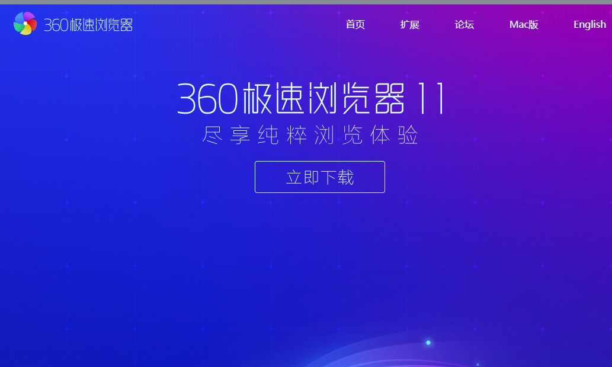
-
GitHub Client (on Windows)

-
Evernote Client (on Windows)

Electron – 用前端的知识来开发桌面应用
Electron（原名为Atom Shell）是GitHub开发的一个开源框架。 它允许使用Node.js（作为后端）和Chromium（作为前端）完成桌面GUI应用程序的开发。具体可以参阅electron 官网
随着PC机不断提升的机器性能以及H5标准的发展，利用JS语言依靠Browser为载体的B/S体系软件，有着很强的交互表现力，使用Html/JS作为UI的开发语言，可以十分高效快速的完成各种复杂界面（尤其是各种动画效果）开发。目前 Electron 已成为开源开发者、初创企业和老牌公司常用的开发工具。
一个基础的Electron包含三个文件：
- package.json（元数据）
- main.js（代码）
- index.html（图形用户界面）
框架由Electron可执行文件（Windows中为electron.exe、macOS中为electron.app、Linux中为electron）提供。开发者可以自行添加标志、自定义图标、重命名或编辑Electron可执行文件。
采用Electron的软件：
- Skype
- Wordpress
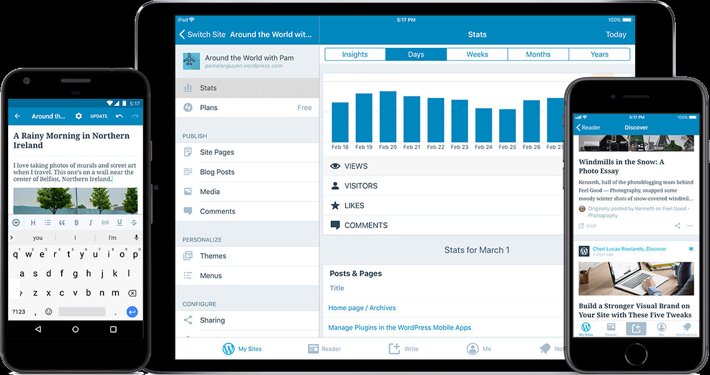
- VSCode
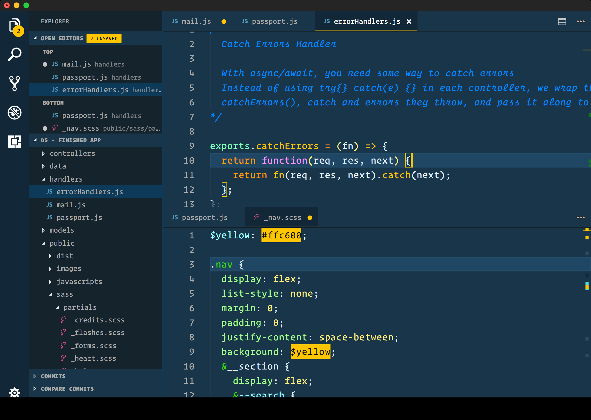
- Atom
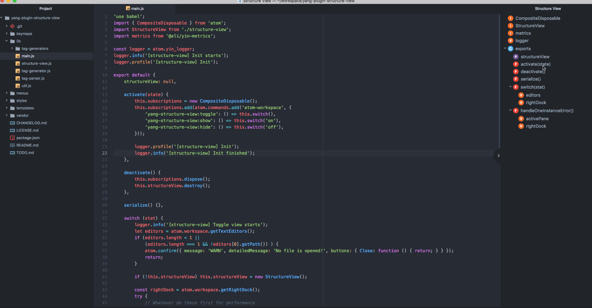